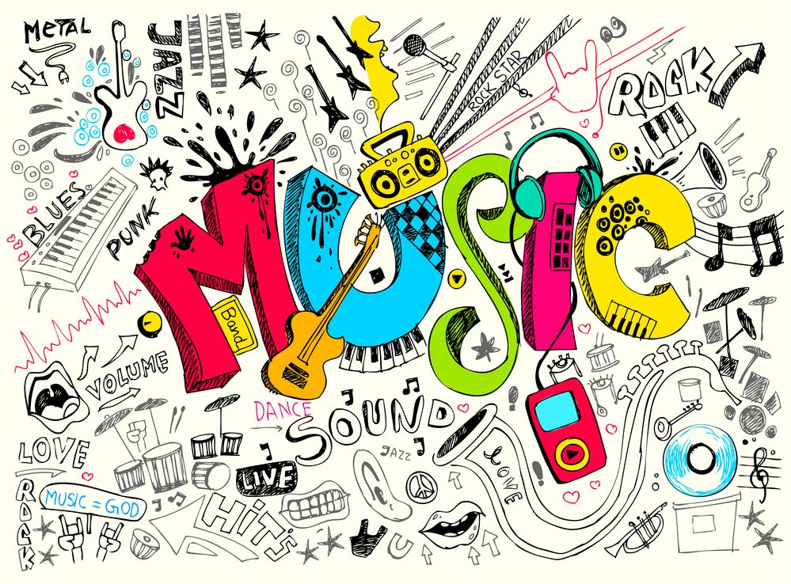

GENEROS MUSICALES:
Rock and Roll
Rock and roll es un género musical que alcanzó enorme popularidad.
Una combinación entre blues, country y rhythm and blues dio como resultado
un ritmo que puso a bailar al mundo entero y que a la fecha es referente
e influencia de grandes artistas. Ejemplos de bandas o artistas de rock and
roll son Elvis Presley, Chuck Berry, Quincy Jones...
Pop
pop es otro ritmo derivado del blues y del rock and roll. Con grandes influencias
del folk británico y el rhythm and blues, surgió el pop como una alternativa ligera
y más comercial. Actualmente es uno de los géneros más vendidos en el mundo, y no está
clara la frontera que separa la denominación "pop" para referirse simplemente a música
comercial y popular4, sea cual sea su género, o si estamos ante un tipo de música con
identidad propia.